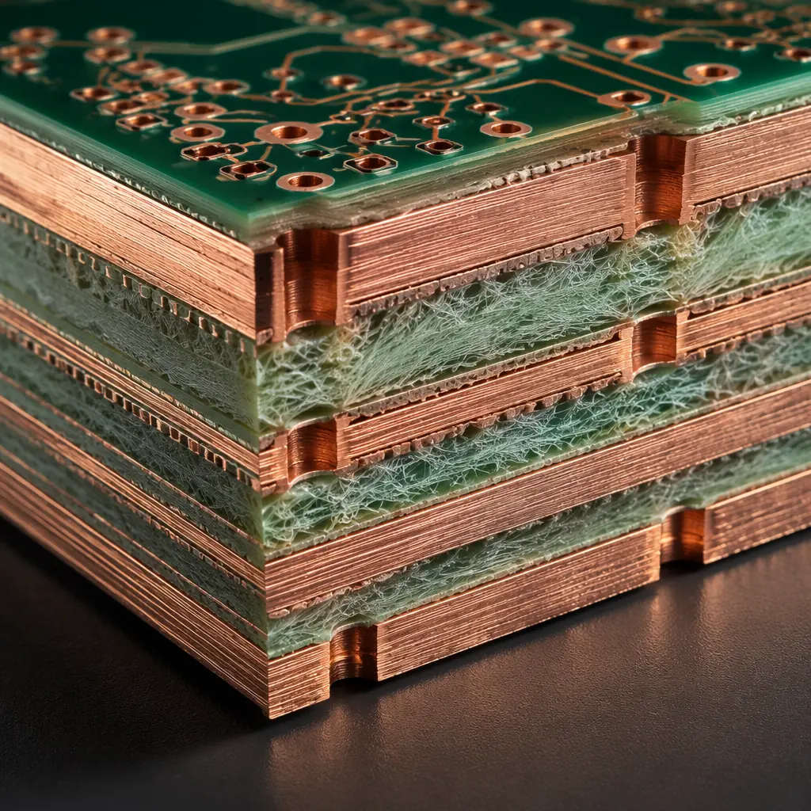
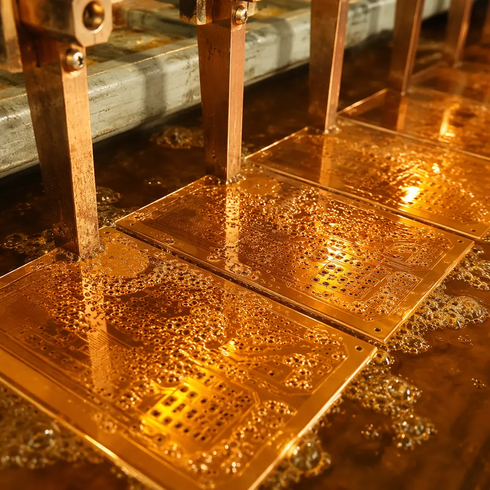
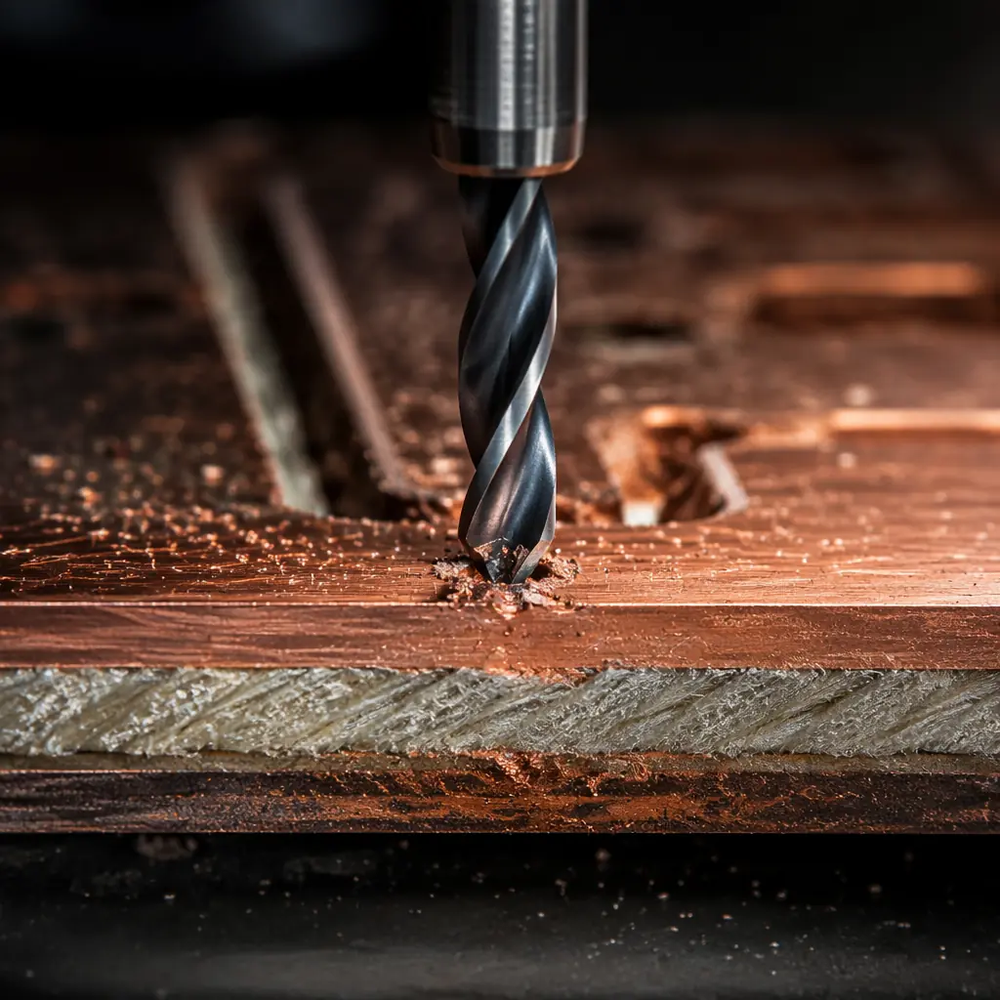
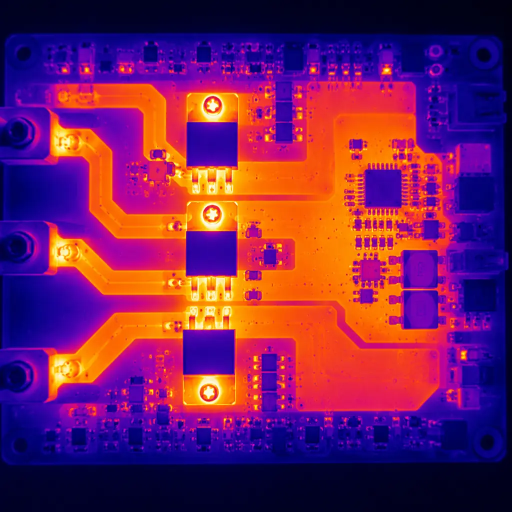
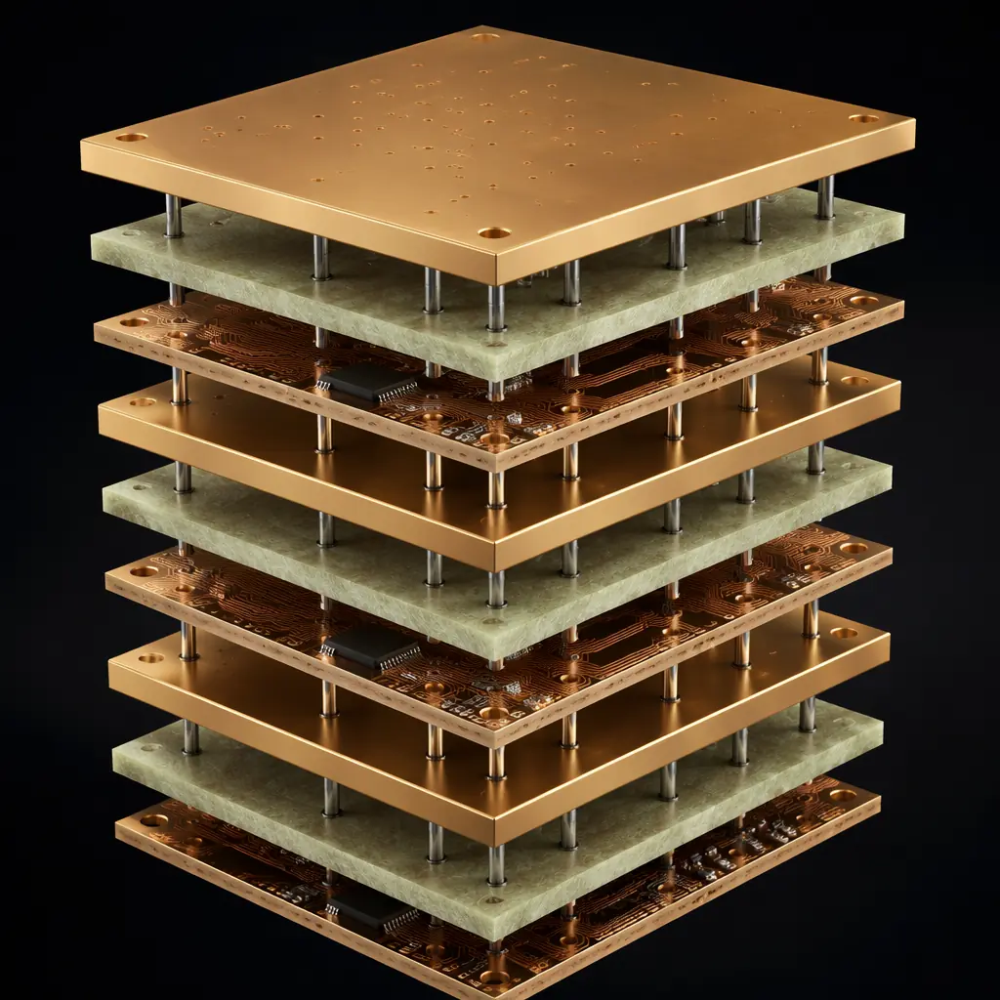
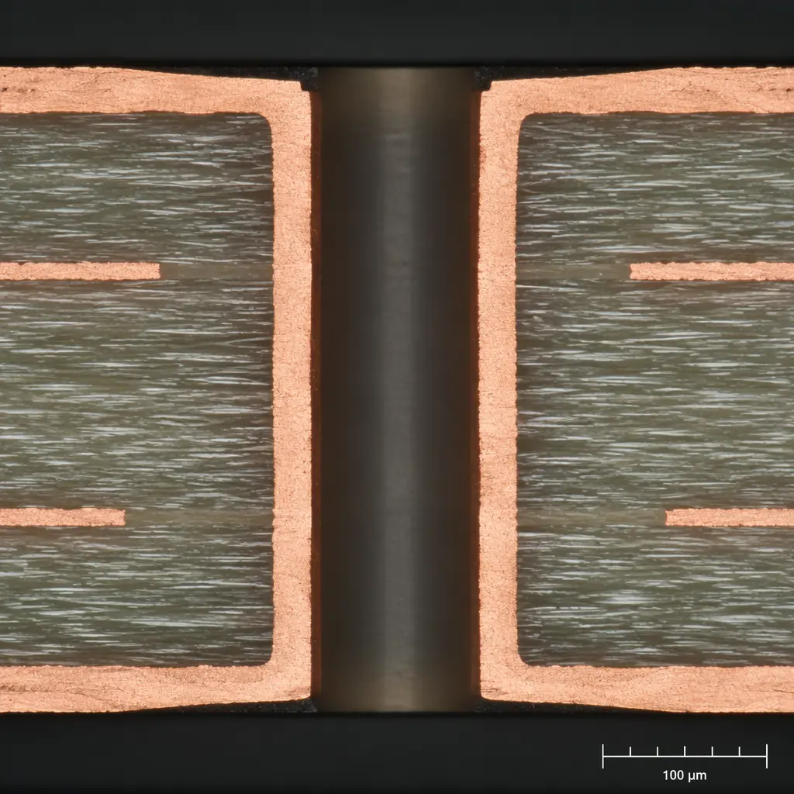

When a trace needs to carry 50 amps instead of 50 milliamps, the PCB design rulebook changes entirely. Standard 1oz copper — 35μm thick — is adequate for signal and low-power circuits, but power electronics, automotive battery management, industrial motor drives, and energy storage systems demand copper weights of 3oz to 6oz (105–210μm). These are heavy copper PCBs, and they require fundamentally different design rules, manufacturing processes, and thermal strategies than conventional boards.
This guide covers what qualifies as heavy copper, the manufacturing challenges that separate capable fabricators from the rest, how to select the right copper weight for your application, and the design rules that prevent fabrication failures. At Huaxing PCBA, we process heavy copper boards from 0.5oz to 6oz across 2–32 layer stackups — including hybrid designs where heavy copper power layers coexist with fine-pitch signal layers — under IATF 16949 and ISO 9001 certified production.

What Qualifies as Heavy Copper?
The industry convention draws the line at 3oz (105μm). Below that, standard PCB etching and plating processes handle the copper thickness without special accommodations. Above 3oz, four things change simultaneously:
| Copper Weight | Thickness | Min Trace/Spacing | Typical Applications | Process Difficulty |
|---|---|---|---|---|
| 1oz | 35μm | 3/3mil | Standard digital, signal | Baseline |
| 2oz | 70μm | 4/4mil | Power supply, moderate current | Standard |
| 3oz | 105μm | 6/6mil | Automotive BMS, motor drivers | Moderate |
| 4oz | 140μm | 8/8mil | EV charging, industrial power | High |
| 5oz | 175μm | 10/12mil | Welding equipment, UPS | Very High |
| 6oz | 210μm | 12/14mil | High-current bus bars, traction inverters | Expert |
The minimum trace/space figures assume a capable fabricator with optimized etching compensation. At 6oz, the copper is thicker than the remaining dielectric in many 4-layer designs — the board's mechanical identity shifts from "substrate with copper" to "copper with substrate." This has consequences for everything from drilling parameters to solder mask coverage.

The Manufacturing Challenge: Why Heavy Copper Is Hard
Standard PCB etching sprays ferric chloride or cupric chloride onto the panel, dissolving unprotected copper in seconds to minutes depending on thickness. For 1oz copper, etch time is roughly 45–60 seconds. For 6oz copper, that jumps to 5–7 minutes — and the etchant attacks laterally as well as vertically, creating "undercut" that eats into the trace width from the sides.
Etching Undercut — The Critical Yield Killer
Imagine you want a 0.3mm trace on 6oz copper. The etching mask defines 0.3mm, but as the etchant dissolves copper vertically through 210μm, it also eats into the trace sides at roughly 60–80% of the vertical rate. The result: your 0.3mm trace emerges from etching at 0.18–0.22mm — up to 40% narrower than designed. The fabricator must apply "etch compensation" — widening the mask artwork to account for undercut — and the compensation factor must be characterized for each copper weight and etchant chemistry combination.
At Huaxing PCBA, we maintain validated etch compensation profiles for every copper weight from 0.5oz to 6oz. Each profile is re-characterized quarterly against cross-section measurements from production coupons. For a 6oz board with a 12mil trace target, our pre-compensated artwork width is 16–18mil — the etching process brings it to precisely 12mil ±1.5mil. Without this compensation, trace width variation would exceed 30%, creating hot spots and reliability failures in the field.
Plating Uniformity
Heavy copper boards typically require additional copper plating to build up via walls and pad surfaces. The challenge is throwing power: the plating solution deposits more copper on high-current-density areas (board edges, isolated pads) and less in low-current-density areas (center of dense patterns, small vias). On a 500×600mm panel at 6oz, the thickness variation center-to-edge can reach ±15% without active current distribution control. Huaxing uses pulse-reverse plating with dynamic anode adjustment to hold variation to ±5% across the panel.

Copper Weight Selection by Application
Choosing copper weight is not about picking the highest number available — excess copper adds cost, increases minimum feature size, and complicates thermal management in unexpected ways (thick copper planes act as heat spreaders, which can make selective soldering more difficult). Here is the application-specific selection matrix:
| Application | Current Range | Recommended Copper | Key Consideration |
|---|---|---|---|
| DC-DC converter (≤100W) | 5–15A | 2oz | Balance weight with switching frequency |
| BMS (48V battery pack) | 20–80A | 3–4oz | Continuous current rating, not peak |
| EV on-board charger (3.3kW) | 15–30A | 4oz | Creepage distance per IEC 60664 |
| EV on-board charger (6.6kW+) | 30–60A | 5–6oz | Hybrid stackup with signal layers |
| Industrial VFD (5–50HP) | 20–100A | 4–6oz | Partial discharge risk at >500V |
| Solar inverter (5kW string) | 10–25A DC | 3–4oz | MPPT tracking noise immunity |
| Energy storage BMS (high voltage) | 50–200A | 5–6oz | Bus bar integration, not traces alone |
| Welding machine control | 100–300A | 6oz + external bus bars | Trace width impractical; bus bars required |
Above approximately 100A continuous, even 6oz traces become impractical — a 100A trace at a 20°C temperature rise requires roughly a 50mm-wide trace on 6oz copper, consuming an unreasonable amount of board area. For these applications, the PCB carries control and sensing while current flows through assembled bus bars or external conductors — a design decision that should be made early in the architecture phase.
Thermal Management: Heavy Copper as a Heat Spreader
One of heavy copper's underappreciated advantages is its thermal performance. A 6oz copper plane has 6× the thermal mass and 6× the lateral thermal conductivity of a 1oz plane. In a power converter, this means the copper itself acts as a distributed heatsink — spreading heat from hot components across the entire board area and reducing hot-spot temperatures by 15–30°C compared to equivalent 1oz designs.
This effect is particularly valuable in new energy applications where power MOSFETs and IGBTs generate concentrated heat. On a 4oz copper board, a TO-247 MOSFET dissipating 15W may see a junction-to-ambient thermal resistance of 18–22°C/W through the PCB alone — competitive with a discrete heatsink. On 1oz copper, the same device would need a dedicated heatsink to stay within safe operating area.
Design rule for thermal vias on heavy copper: Use 0.3–0.4mm diameter vias on a 1.0–1.2mm pitch directly under the thermal pad of power components. Fill or plug the vias to prevent solder wicking. On 4oz+ copper, a 10×10 via array under a TO-263 package reduces junction temperature by an additional 8–12°C compared to no vias — enough to extend component lifetime by 2–3× under automotive temperature cycling conditions.

Design Rules for Heavy Copper PCBs
Trace Width and Current Capacity
The IPC-2152 standard provides the most widely accepted current-carrying capacity curves for PCB traces. For heavy copper designs, the key insight is that internal layers carry less current than external layers at the same trace width — internal traces have no convective cooling and rely entirely on conduction through the dielectric. At 6oz external copper with a 10°C temperature rise, a 5mm-wide trace carries approximately 28A. The same trace on an internal layer carries approximately 16A — a 43% derating.
Practical recommendations for trace width at 10°C rise (external layers):
- 3oz: 1.0mm trace ≈ 11A; 3.0mm trace ≈ 25A; 5.0mm trace ≈ 38A
- 4oz: 1.0mm trace ≈ 14A; 3.0mm trace ≈ 32A; 5.0mm trace ≈ 48A
- 6oz: 1.0mm trace ≈ 19A; 3.0mm trace ≈ 43A; 5.0mm trace ≈ 65A
Spacing and Creepage
High-current applications often coincide with high voltage, making creepage distance a safety-critical parameter. For heavy copper boards operating above 60V DC, IEC 60664-1 defines minimum creepage based on pollution degree and material group:
- 100V working voltage: 0.5mm (pollution degree 2, material group IIIa)
- 250V: 1.25mm; 400V: 2.0mm; 630V: 3.2mm
- 1000V: 5.0mm — at this voltage, consider slots or insulation barriers between traces
Heavy copper's thick trace edges act as field concentrators, increasing the risk of partial discharge at high voltage. For designs above 500V, round the trace corners with a radius of at least 0.5mm and avoid sharp 90° bends in high-voltage nets.

Via Design for Heavy Copper
Plated through-holes in heavy copper require special attention. The copper thickness inside the via is proportional to the surface copper — a 6oz board will have approximately 6× the via wall copper of a 1oz board. This is good for current capacity but creates two problems: minimum drill size increases (thicker copper requires larger holes to maintain plating uniformity), and the annular ring must be larger to account for drill wander through thick copper.
For 4–6oz boards, specify minimum drill diameter of 0.35mm (vs 0.2mm for 1oz) and minimum annular ring of 0.2mm (vs 0.125mm). If your design requires fine-pitch BGAs alongside heavy copper power layers, consider a hybrid stackup where the heavy copper is confined to dedicated power layers separated by standard prepreg from the fine-pitch signal layers.
Cost Factors and Trade-offs
Heavy copper doesn't just cost more because of raw material — the processing time, yield impact, and special handling all compound. At 6oz, the manufacturing cost is typically 1.8–2.5× that of an equivalent 1oz board. The breakdown:
- Material: +30–50% (more copper foil, heavier prepreg to fill thicker copper patterns)
- Etching: +40–60% (longer cycle time, higher chemical consumption, more frequent bath changes)
- Drilling: +20–30% (slower feed rates, more frequent drill bit replacement)
- Yield impact: +10–15% (reduced first-pass yield from undercut and plating variation)
- Testing: +20% (higher-current test fixtures, longer test cycles for thermal validation)
The cost curve is not linear — jumping from 3oz to 4oz adds roughly 15% to unit cost, while 5oz to 6oz adds 25–30% because of the additional process steps (double-etch cycles, extended plating times, and the need for special solder mask application to cover the thick copper topography). For budget-sensitive projects, verify whether 4oz meets your current requirements before specifying 6oz — the jump from 4oz to 6oz often doesn't make economic sense unless current density truly demands it.
Quality Verification for Heavy Copper
Standard PCB testing — flying probe continuity, AOI — doesn't fully validate heavy copper quality. The failure modes are different: a trace that passes continuity testing may still have 0.2mm of undercut that creates a hot spot under load, failing after weeks of thermal cycling. For heavy copper boards, we add:
- Cross-section analysis: One coupon per panel, micro-sectioned at 200× magnification, measuring trace width, plating thickness, and via wall uniformity. Acceptance criteria: trace width within ±10% of nominal, via wall thickness >25μm minimum.
- Thermal stress test: 288°C solder float for 10 seconds (per IPC-TM-650 2.6.8), followed by micro-section to verify no delamination or barrel cracking.
- Current cycling test: For boards above 50A rated current: 100 cycles at 150% rated current for 30 seconds on, 30 seconds off — verifying no trace fusing, no solder joint degradation, and temperature rise within design limits.
These tests are standard practice at our IATF 16949-certified facility, validated on every production lot of industrial power electronics and automotive-grade boards.

When Heavy Copper Is the Right Choice
Specify heavy copper (3–6oz) when: your design carries >10A continuous on PCB traces, operates above 48V with creepage requirements, dissipates >5W in a single component through the board, or requires automotive/industrial reliability with extended thermal cycling.
Stay with standard copper (1–2oz) when: currents are below 10A, voltages below 48V, fine-pitch BGAs (<0.5mm pitch) constrain trace density, or the design is cost-sensitive with generous board area for wide traces.
Consider a hybrid approach when: you need heavy copper on 2–4 power layers and fine-pitch routing on separate signal layers. This captures 80% of heavy copper's benefits at roughly 60% of the full-heavy-copper cost — and it's the most common architecture we build for EV power electronics and industrial motor drives.
Heavy copper PCB manufacturing is not a niche — it is the standard for power electronics, and the difference between a capable fabricator and an average one is measured in yield, reliability, and whether the board survives 1,000 thermal cycles. At Huaxing PCBA, heavy copper is a core competency, not an afterthought. Our etch compensation profiles, pulse-reverse plating process, and IATF 16949 quality system are built around producing heavy copper boards that meet IPC-A-610 Class 3 standards — consistently, at scale.
Send us your stackup and current requirements. We'll run the numbers — trace width, temperature rise, creepage margin — and tell you exactly which copper weight and design rules your application needs. No guesswork, just engineering.